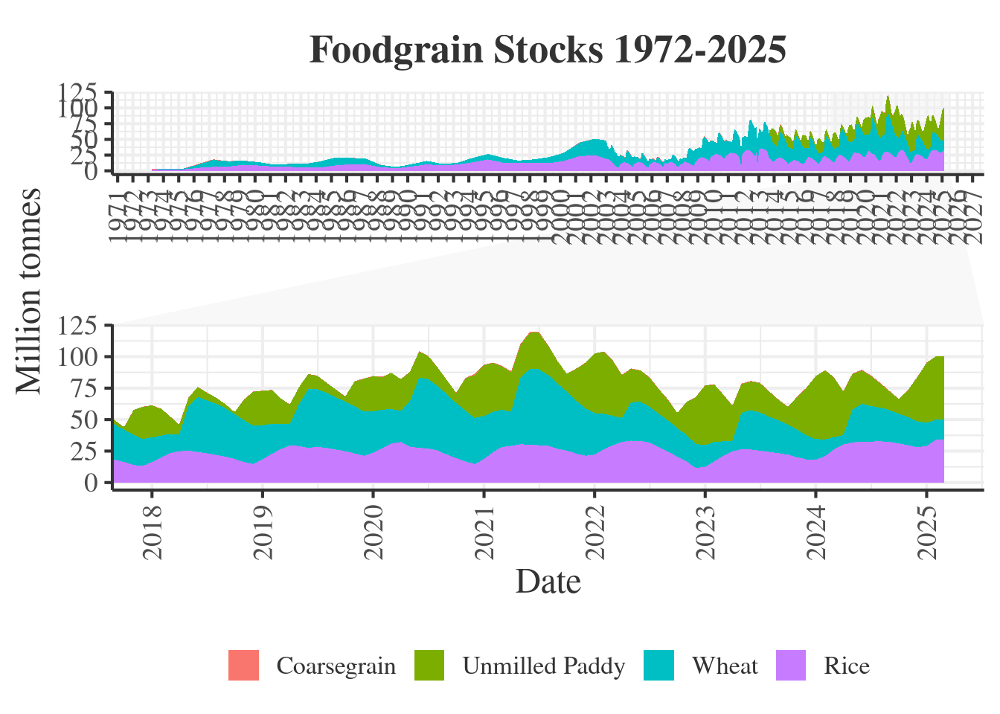

Code
library(data.table)
library(ggplot2)
library(tidyverse)
library(tidyr)
library(scales)
library(ggforce)
library(gt)Pawan
November 1, 2025
November 1, 2025
Total foodgrain stocks peaked at 100.5 lakh tonnes (Feb 2025), driven by unmilled paddy (50.1 lakh tonnes).
Wheat stocks fluctuated significantly, dropping to 7.5 lakh tonnes (Apr 2024) and rising to 34 lakh tonnes (Feb 2025).
Rice stocks steadily increased from 21.1 lakh tonnes (Mar 2023) to 34 lakh tonnes (Feb 2025).
Load necessary packages
Read the data and cleaning
fread("~/stocks/stocksall.csv", sep = ",", header = T)->stocksall
unique(stocksall)->stocksall
fread("~/stocks/pdsold.csv", sep = ",", header = T)->oldstocks
oldstocks[,coarsegrains := stocks_total-stocks_rice-stocks_wheat]
melt(stocksall,id = c("Year", "Commodity"))->t
as.Date(paste(01, t$variable, t$Year, sep = "-"), "%d-%b-%Y")->t$Date
factor(t$Commodity, levels = c("Rice", "Wheat",
"Unmilled Paddy",
"Coarsegrain", "Total"))->t$Commodity
separate(oldstocks, col = Year, sep = "-", into = c("v1", "year"))->oldstocks
as.Date(paste("01", "04", oldstocks$year, sep = "-"), "%d-%m-%y")->oldstocks$Date
setDT(oldstocks)
oldstocks[Date<as.Date("01-01-2003", format="%d-%m-%Y")
,.(Date, Rice = stocks_rice, Wheat = stocks_wheat,
Coarsegrain = coarsegrains)]->oldstocks
melt(oldstocks, id = "Date")->t1
t1$value * 10->t1$value
names(t1)[names(t1) == "variable"]<-"Commodity"
t[Commodity != "Total",.(Date, Commodity, value)]->t
t[!is.na(value)]->t
t1[!is.na(value)]->t1
rbind(t, t1)->t1
as.numeric(t1$value)/10->t1$value
t1[!is.na(value)]->t1
t1[,.(Commodity, value = cumsum(value)),.(Date)]->t1
factor(t1$Commodity, levels = rev(c("Rice", "Wheat",
"Unmilled Paddy",
"Coarsegrain")))->t1$Commodity
t1[order(Commodity, Date)]->t1Custom theme for plots
my_theme <- theme_bw(base_size = 16) + ## Start with theme_bw and increase base size
theme(text = element_text(family = "serif", color = "#333333"), ## Set font family and color
plot.title = element_text(size = 20, face = "bold",
hjust = 0.5, margin = margin(10, 0, 10, 0)), ## Center and style title
axis.title = element_text(size = 18),
axis.text = element_text(size = 14),
legend.position = "bottom",
legend.title = element_blank(), ## Remove legend title
panel.grid.major = element_line(color = "#EEEEEE"), ## Lighter grid lines
panel.border = element_blank(), ## Remove panel border
axis.line = element_line(color = "#333333"), ## Add axis lines
axis.text.x = element_text(angle = 90, vjust = 0.5, hjust=1),
strip.background = element_rect(fill = "#F2F2F2", color = NA) ## Style facet strips (if used)
)Visualization
ggplot(t1, aes(x = Date, ymax = value, ymin = 0)) +
geom_ribbon(aes(fill = Commodity)) +
scale_y_continuous("Million tonnes") +
scale_x_date(date_breaks = "1 year",
date_labels = "%Y") +
my_theme +
ggtitle(paste0("Foodgrain Stocks",
" ", "1972", "-", max(year(t1$Date)))) +
facet_zoom(xlim = c(as.Date("2018-01-01"), as.Date(max(t1$Date))))->p
p
Table of Last 24 Months Foodgrain Stocks
melt(stocksall, id = c("Year", "Commodity"))->t
paste(01, t$variable, t$Year, sep = "-")->t$Date
as.Date(t$Date, "%d-%b-%Y")->t$Date
t[!is.na(value)]->t
as.numeric(t$value)/10->t$value
factor(t$Commodity, levels = c("Wheat", "Rice",
"Unmilled Paddy",
"Coarsegrain", "Total"))->t$Commodity
t[Commodity != "Total",.(value, Commodity, Date)]->t
t[,.(value = sum(value),
Commodity = "Total"), Date]->t1
rbind(t, t1)->t
t[,value := round(value, 1)]
dcast(t, Date~Commodity, sum)->t
format(t$Date, "%b-%Y")->t$Date
gt(tail(t, n = 24))| Date | Wheat | Rice | Unmilled Paddy | Coarsegrain | Total |
|---|---|---|---|---|---|
| Apr-2023 | 8.3 | 24.9 | 27.6 | 0.4 | 61.3 |
| May-2023 | 29.0 | 26.5 | 22.7 | 0.5 | 78.7 |
| Jun-2023 | 31.4 | 26.2 | 22.7 | 0.4 | 80.7 |
| Jul-2023 | 30.1 | 25.3 | 23.3 | 0.4 | 79.2 |
| Aug-2023 | 28.0 | 24.3 | 19.6 | 0.4 | 72.3 |
| Sep-2023 | 26.0 | 23.3 | 16.1 | 0.3 | 65.7 |
| Oct-2023 | 24.0 | 22.2 | 13.8 | 0.2 | 60.3 |
| Nov-2023 | 21.9 | 20.0 | 26.3 | 0.2 | 68.4 |
| Dec-2023 | 19.2 | 18.4 | 37.6 | 0.2 | 75.4 |
| Jan-2024 | 16.4 | 18.2 | 50.0 | 0.2 | 84.7 |
| Feb-2024 | 13.3 | 21.0 | 54.7 | 0.4 | 89.4 |
| Mar-2024 | 9.7 | 26.3 | 47.3 | 0.4 | 83.7 |
| Apr-2024 | 7.5 | 30.2 | 34.3 | 0.4 | 72.4 |
| May-2024 | 26.0 | 31.9 | 28.3 | 0.5 | 86.7 |
| Jun-2024 | 29.9 | 32.5 | 26.8 | 0.4 | 89.6 |
| Jul-2024 | 28.3 | 32.6 | 23.7 | 0.6 | 85.2 |
| Aug-2024 | 26.8 | 32.8 | 19.0 | 0.6 | 79.2 |
| Sep-2024 | 25.1 | 32.3 | 14.8 | 0.4 | 72.6 |
| Oct-2024 | 23.8 | 31.1 | 11.4 | 0.2 | 66.4 |
| Nov-2024 | 22.3 | 29.7 | 21.5 | 0.3 | 73.7 |
| Dec-2024 | 20.6 | 28.0 | 35.1 | 0.2 | 84.0 |
| Jan-2025 | 18.4 | 29.1 | 47.6 | 0.2 | 95.3 |
| Feb-2025 | 16.2 | 34.0 | 50.1 | 0.2 | 100.5 |
| Mar-2025 | 16.2 | 34.0 | 50.1 | 0.2 | 100.5 |